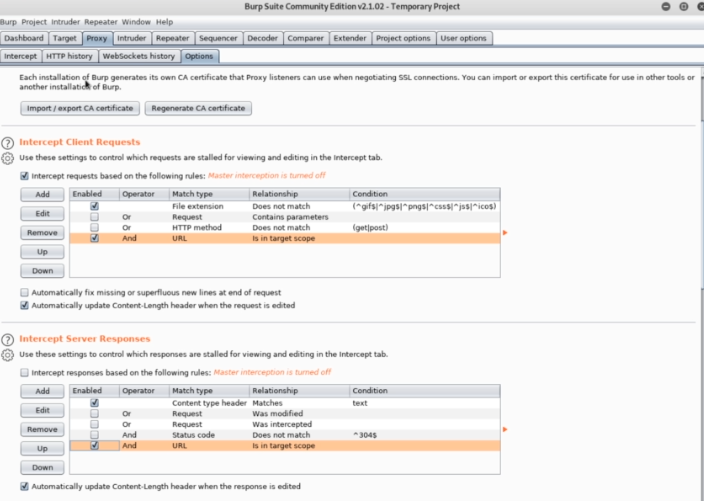
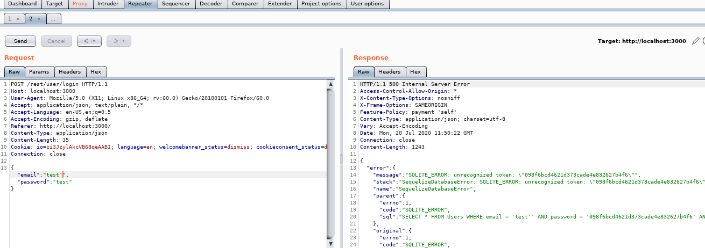
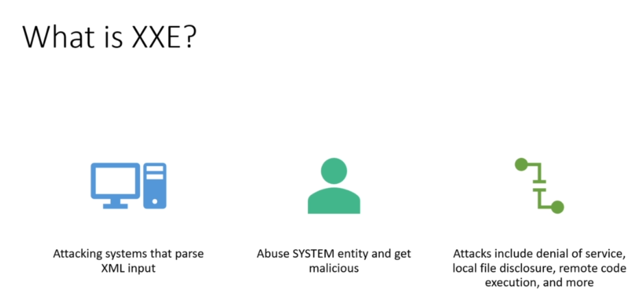
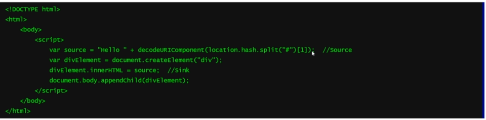
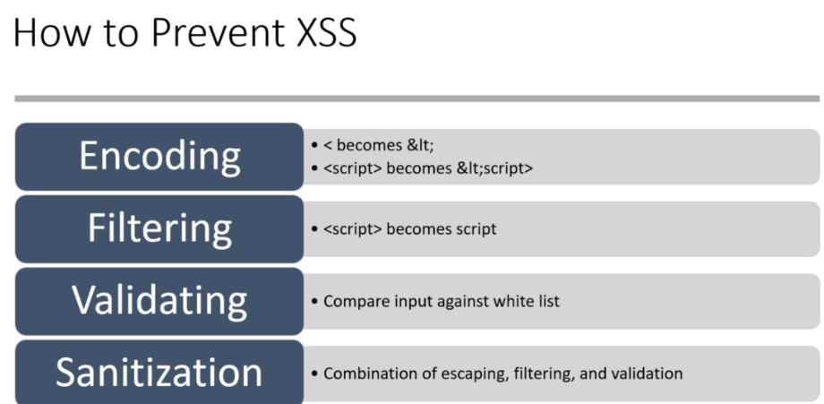
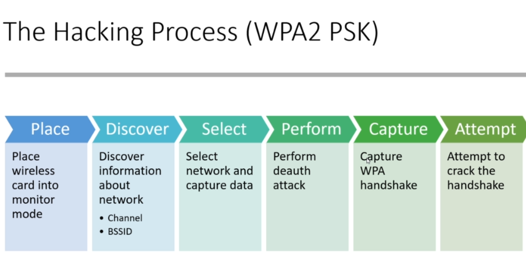

OWASP-->The Open Web Application Security Project is an online community that produces freely-available articles, methodologies documentation, tools, and technologies in the field of web application security
------------------------------------------------------------------------
Top 10 OWASP vulnerabilites in 2020 are:
1-Injection
2-Broken Authentication
3-Sensitve Data Exposure
4-XML External Entities (XXE)
5-Broken Access control
6-Security misconfigurations
7-Cross Site Scripting(XSS)
8-Insecure Deserilizatioin
9-Using Components with known vulnerabilities
10-Insufficient logging and monitoring
google: owasp checklist
-->OWASP based Web Application Security Testing Checklist is an Excel based checklist which helps you to track the status of completed and pending test cases.
--------------------------------------------------------------
Installing OWASP Juice Shop
Google: install Docker Kali
#curl -fsSL https://download.docker.com/linux/debian/gpg | sudo apt-key add -
#echo 'deb [arch=amd64] https://download.docker.com/linux/debian buster stable' | sudo tee /etc/apt/sources.list.d/docker.list
#apt update
#apt install docker-ce
Note: we can deploy juice shop to Heroku and attack it, But there's a couple attacks that cannot be performed on this so that's why we are going to Docker out
#docker pull bkimminich/juice-shop
#docker run --rm -p 3000:3000 bkimminich/juice-shop
----------------------------------------------------------------------
Installing Foxy Proxy
Foxy Proxy-->make it easy to switch between proxies
1-go to prefernces in firefox and make proxy manual
1-Download the latest jar file into your Downloads folder
2-Navigate to /usr/bin and select burpsuite
3-Rename burpsuite to burpsuite(old)
4-Copy the jar that was just downloaded into /usr/bin
5-Right-click and rename the jar to burpsuite
6-In the Permissions tab, select Allow executing file as program
7-Hit close
--------------------------------------------------------------------
Exploring Burp Suite
-->with web apps you have 3 stages of testing:
1-unauthenticated user stage
2-user tier(we log as a user)
3-as admin
unauthenticated stage:
1-in burpsuite-->target-->scope-->add http://localhost:3000-->click on Filter: Hiding out .....-->check show only scope items
2-scan feature[pro version], if you have a pen test you should have a pro version to scan the site and scanning will do 2 different things:
--crawling(it will try different websites)
--active scanning(it will do attacks like sql injection)
Note: scanning is nice but you shouldn't rely on your scanning, rely on manual testing
3-proxy-->intercept-->right click on raw packet and send to repeater-->go to repeater-->send

Repeater-->is going to allow us to intercept requests, send them to repeater and modify the requests
-----------------------------------------------------------------------
What is SQL Injection?
-->SQL injection is an attack in which malicious SQL statements are injected into a SQL database
-->SQL injection is easy to avoid, but still happens often
-->If successful, we can read sensitive databases, extract information, modify databases, and potentially even get a shell
Common SQL Verbs
-->SQL Statements begin with verbs. Let's take a look at a few common verbs:
SELECT-Retrieves data from a table
INSERT-Adds data to a table
DELETE-Removes data from a table
UPDATE-Modifies data in a table
DROP-Delete a table
UNION-Combines data from multiple queries
WHERE-Filters records based on specific condition
AND/OR/NOT-Filter records based on multiple conditions
ORDER BY-Sorts records in ascending/descending order
Special Characters
'and"-string delimiters
--,/*,and # -comment delimiters
*and% -wildcards
; -Ends SQL statement
plus a bunch of others that follow programmatic logic =,+,>,<,(), etc
--------------------------------------------------------------------------
SQL Injection Walkthrough
example:
email input: test
SQL behind a scene: SELECT * FROM Users WHERE email='test';
example:
email input: test'
SQL: SELECT * FROM Users WHERE email='test'';
-->the other single quote that's left over will cause an error that will give us some information because this isn't logically correct
exmaple:
email input: test' OR 1=1; --
SQL: SELECT * FROM Users WHERE email='test OR 1=1; --'
-->OR 1=1; make the entire statment true, every thing after -- comment no longer exist so we don't have to check for a password, what's going to happen is it's going to allow us to log in with this statement and it's going to allow us to log in as admin why??
if we have user ids: 1 2 3 4 5, typically id 1 is your admin
Note: there's a possibility that we have a sql injection and we aren't able to see it at all and called blind sql injection that becomes a little bit more complex
Note: when we see error code in repeater we know we have sql injection, it's only a matter of time to figure out how the sql injection works, but when we inject and nothing comes back or comes back as a normal log we use sleep patterns
solution:
email input: test' (sleep 10)

-------------------------------------------------------------------------------------------------------------
SQL Injection Defenses
Defense 1: Parameterized Statements
-Ensure inputs (parameters) are used safely in SQL statements
good example:
SELECT * FROM users WHERE email=?;
-->the way we're passing data here is the parameter string is going to be passed separately then the parameter is being provided
not good example:
SELECT * FROM users WHERE email = ....+email+....
-->provide email as a variable
Defense 2: Sanitizing Input
-->ensuring that the input that is provided is not malicious, filter malicious code but number 1 is parameterized statements
-------------------------------------------------------------------------
Broken Authentication
1-you should have mutli-factor authentication
2-you shouldn't be allowing weak credentials
3-you should be rotating your session id
4-you should have rate limiting for brute force attackes, you should have like a captcha that will prevent hacker from attacking website
-----------------------------------------------------------------------
Testing for Broken Authentication
1-username enumeration
email: test@test.com
password: test
-->if you click i forget password and give email to website and they say we don't have that email or security question not opened then that's still username enumeration
----------------------------------------------------------------------
Testing for Sensitive Data Exposure
-->look for key or keys, look for response of all js files
headers-->gives us information on how web app protect itself
HSTS-->http strict transport security, that is a header that should be set in order to prevent an attack where we take secure data say https and strip it and it's called a protocol downgrade attack and we make it http
-->if you want to scan headers in website use: https://securityheaders.com
-->we should also be looking at the level of encryption on the website, we use nmap
ex:
#nmap --script=ssl-enum-ciphers -p 443 tesla.com
---------------------------------------------------------------------
XML External Entities(XXE)

XXE-->it abuses systems that parse XML input, we are going to take XML input and get malicious with it, we're going to upload it into upload file feature and it's going to try to parse XML input and we will be able to get some information out of the system, and the attacks that we can do include DOS(denial of service), local file disclosure, remote code execution and much more
classic XXE payload:
<?xml version="1.0" encoding="ISO-8859-1"?>
<!DOCTYPE foo [
<!ELEMENT foo ANY >
<!ENTITY xxe SYSTEM "file:///etc/passwd" >]><foo>&xxe;</foo>
-----------------------------------------------------------------------
XXE Attack and Defense
1-we login as a normal user
2-we should navigate around and see what we have access to
-->file uploads can be very devastating if they are not handled properly for web application, at a bare minimum we should see if the upload feature is functioning the way it is, so it shouldn't at least allow to upload xml files
---------------------------------------------------------------------
Broken Access Control
-->there's so many different vulnerabilities that can fall into Broken Access Control, what you need to know about Broken Access Conrol is you really should know what it is at high level and that means that user gets access to somewhere they shouldn't, it will be broken access control if a regular user like me is able to access the panel of admin
----------------------------------------------------------------------
Security Misconfiguration Attacks and Defenses
-->like a default credential on a web page that happens so much
Note: you should always use a best practice when installing things, make sure things are not installed on your systems that you don't need, you don't have any unnecessary ports open or accounts activated, you're not using default credentials on your web pages, you're not allowing for stack traces or more verbose error messaging
--------------------------------------------------------------------------
Cross-Site Scripting (XSS)
there are 3 types of cross-site scripting:
1-Reflected(we're going to inject something malicious and you are going to get a pop up, it never gets stored on the server)
2-stored or persistent XSS(what that means is we inject a malicious payload and then it's stored on the server)
3-DOM(we attack specifically dom)
Example of reflected xss:
<?php
$username = $_GET['username']
echo "Hi $username!";
?>
index.php?username=heath
Hi Heath!
index.php?username=<script>alert(1)</script>
-------------------------------------------------------------------
Reflective and Dom require social enineering, we have somebody to open malicious link, we might run javascript which is going to execute and steal a cookie from user and we're going to try to log in as them, but we need to be able to know the user and then send well crafted link social engineering, and guess what you're going to the page you don't even know that it's there, you're not looking at the source code,you have no idea what's going on
with xss->we can steal cookies,key logging,dos, deface a web page
DOM based cross site-->source is where you insert malicious input, sink is where it's executed

------------------------------------------------------------------------------
Preventing XSS

------------------------------------------------------------------------------
Insecure Deserialization
Serialization-->convert data into json,xml,binary and sent over network
Deserialization-->that means we're taking this serialized data and then deserialized it
-->so we take something malicious, we serialize that exploit and then the application takes that data and deserialize it and executes it, web app use quite bit serialization and deserialization, it's really difficult to just go out there and find this vulnerabilities but it doesn't mean that they're not out there
----------------------------------------------------------------------
Insufficient logging and monitoring
1-web app should monitor logs like who logs in web app and when
2-if there is no monitor to activities like brute force attack or scanning web app then it's logging and monitoring vulnerabilities
-----------------------------------------------------------------------
Wireless Penetration testing

-----------------------------------------------------------------------------------------